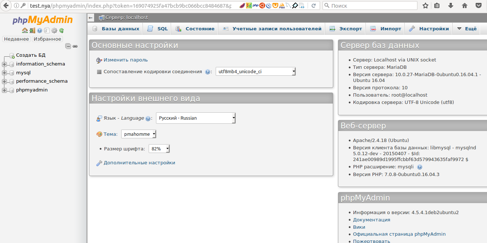

Лабораторная #14 по ОС
Лабораторная работа №14 - «Установка простого Web-сервера(LAMP)».
Цель работы: Целью работы является получение практических навыков по установке и настройке локального сервера на Unix.Введение
Что вообще такое web-сервер и с чем его кушают? Веб-сервер (web-server) - это сервер, отвечающий за прием и обработку запросов (HTTP-запросов) от клиентов к веб-сайту. В качестве клиентов обычно выступают различные веб-браузеры. В ответ веб-сервер выдает клиентам HTTP-ответы, в большинстве случаев, вместе с HTML-страницей, которая может содержать: всевозможные файлы, какие-то изображения, медиа-поток или любые другие данные.
Современный сайт представляет собой не просто набор HTML-документов, но и включает в себя множество технологий, в том числе серверных, таких как: SSI (Server-Side Includes, включения на стороне сервера), PHP (PHP: Hypertext Preprocessor, PHP: препроцессор гипертекста), базы данных и многое другое. Для ознакомления и изучения этих технологий ошибкой будет использовать посещаемый рабочий сайт в Интернете, поэтому имеет смысл установить необходимый комплект программ на локальный компьютер и тестировать все на нем.
Наиболее популярной связкой таких программ является веб-сервер Apache, язык программирования PHP, система управления базами данных MySQL, оболочка для администрирования баз данных PhpMyAdmin.
Указанные программы работают преимущественно под управлением Linux подобных систем, но имеются и версии под Windows. Основной плюс этой связки программ в универсальности. Сайт, созданный и проверенный на локальном компьютере под Windows, легко может быть перенесен на сервер с FreeBSD. К тому же этот набор поддерживает подавляющее большинство хостеров.
Веб-сервер
Веб-сервером называется программа, которая анализирует приходящие запросы и формирует готовые документы отправляемые пользователю. В качестве веб-сервера часто выступает Apache, как наиболее устоявшийся и популярный в Интернете. По разным оценкам его доля составляет почти 50% от общего числа используемых веб-серверов. Вот одни из популярных версий web-серверов(тут имеется именно по, которые объединяет как БД, так ЯП, и сам сервер)
- AppServ
- VertrigoServ
- XAMPP
- OpenServer
- Endels
- Wampserver
- LAMP(различные его сборки)
Выполнение
Стек LAMP - это набор программного обеспечения с открытым исходным кодом, которой обычно устанавливается на сервер для отображения динамических веб-сайтов и веб-приложений. Эта аббревиатура обозначает операционную систему Linux с установленым веб-сервером Apache. Данные сайта хранятся в базе данных MySQL, динамический контент обрабатывается с помощью PHP.
Иногда букву P в аббревиатуре расшифровывают как Perl и Python, другие возможные языки веб-разработки.
Существует множество вариантов термина, в частности:
- LEMP — Nginx вместо Apache (Nginx читается Engine-X)
- LNMP — другой вариант названия 'Nginx вместо Apache'
- BAMP — BSD вместо Linux
- MAMP — Mac OS X вместо Linux.
- SAMP — Solaris вместо Linux
- WAMP — Microsoft Windows вместо Linux
- WASP — Windows, Apache, SQL Server и PHP
- WIMP — Windows, IIS, MySQL и PHP
- PAMP — Personal Apache MySQL PHP — набор серверов для платформы S60
- FNMP — FreeBSD и Nginx вместо Linux и Apache.
- XAMPP — кроссплатформенная сборка веб-сервера, X (любая из четырёх операционных систем), Apache, MySQL, PHP, Perl
ШАГ 1 - Установка Apache
Веб-сервер Apache в настоящее время является одним из самых популярных веб-серверов в мире, что делает его прекрасным выбором для хостинга веб-сайта. Мы с легкостью можем установить Apache используя менеджер пакетов Ubuntu apt. Менеджер пакетов позволяет нам легко установить большую часть программного обеспечения из репозиториев Ubuntu. Для начала установки выполним команд
sudo apt-get update sudo apt-get install apache2
Поскольку мы используем команду sudo, эти команды будут выполняться с привилегиями root. В процессе операционная система запросит ваш пароль пользователя. После завершения выполнения этих команд ваш веб-сервер будет установлен.Запустите его вот этой командой на всякий случай, вдруг он сам не заработает.
Данная команда (service имя_службы start\stop\restart) работает с демонами в linux, то есть аналогами служб в windows.
Проверить результат установки можно набрав в вашем веб-браузере localhost
Вы увидите страницу Apache, отображаемую по умолчанию для информации и целей тестирования. Она должна выглядеть похожим образом:
Если вы видите эту страницу, ваш веб-сервер корректно установлен. Собсивенно это и есть та шутка которая принимает HTTP-запросы от клиентов, обычно веб-браузеров, и выдающий им HTTP-ответы, как правило, вместе с HTML-страницей, изображением, файлом, медиа-потоком или другими данными.
- Apache — свободный веб-сервер, наиболее часто используемый в UNIX-подобных операционных системах
- IIS от компании Microsoft, распространяемый с ОС семейства Window
- nginx — свободный веб-сервер, разрабатываемый Игорем Сысоевым с 2002 года и пользующийся большой популярностью на крупных сайтах
- lighttpd — свободный веб-сервер
- Google Web Server — веб-сервер, основанный на Apache и доработанный компанией Google
- Resin — свободный веб-сервер приложений
- Cherokee — свободный веб-сервер, управляемый только через web-интерфейс
- Rootage — веб-сервер, написанный на java
- THTTPD — простой, маленький, быстрый и безопасный веб-сервер
Настройка виртуальных хостов
Зачем нужно? Нужно для того, чтобы если вы разрабатываете и тестите несколько сайтов на одной машине локально, это делает работу с ними более удобной.
Создайте новую папку для нашего виртуального хоста и дайте ей права:
И в ней создайте ещё одну папку, для приветственного сообщения
Создайте файл для кода, который идёт ниже
Теперь можно добавлять виртуальный хост, для этого создайте файл и наполните его содержимым:
Если захотите назвать сайт по своему, то будьте внимательнее с этим файлом! Да и вообще в целом внимательнее.
Вот что значат некоторые строки:
- ServerName - имя нашего сайта, виртуального хоста
- ServerAlias - сайт будет доступен также по этому имени
- DocumentRoot - корневой каталог с файлами сайта
Теперь сохраните файл, далее нужно активировать наш хост:
Теперь необходимо завернуть трафик с этого домена на локальный сервер, для этого добавьте строчку в /etc/hosts:
Вот в принципе и все, что-то случилось с кодировочкой, но это пока не важно.
Ну и так как мы ещё любим безопасность (все данные между сервером и клиентом будут шифроваться), требуется включить ssl.
Протокол SSL представляет собой стандартную технологию безопасности, которая используется для установления шифрованного соединения между веб-сервером и веб-клиентом. SSL позволяет безопасно обмениваться данными благодаря идентификации и проверки подлинности сервера, а также обеспечению конфиденциальности и целостности всех передаваемых данных. Поскольку SSL предотвращает перехват или взлом данных, отправляемых по сети, его необходимо использовать со всеми механизмами регистрации или аутентификации, а также во всех сетях, в которых происходит обмен конфиденциальной информацией.
SSL позволяет защитить имена, пароли и другую важную информацию от дешифровки в канале связи между Web Adaptor и сервером. При использовании SSL подключение к веб-страницам и ресурсам осуществляется по протоколу HTTPS, а не HTTP.
Его настройка осуществляется тремя
Т.к. у нашего ssl соединения нет сертификата, то будут небольшие проблемы, но мы то с вами знаем, что нашему сайту можно доверять, так то можете добавить в исключения.

ШАГ 2 – Установка php7
Без языка программирования установка и настройка lamp в Ubuntu будет не завершена. PHP - это самый популярный язык программирования в веб. Его название, это рекурсивный акроним - PHP Hypertext Processor. Кроме того, что этот язык используется в веб, его можно применять, как язык общего назначения, язык сценариев. Это последняя версия которая вышла на сегодняшний день.
Установка php 7 Ubuntu 16.04 выполняется следующей командой:
Если вы хотите установить все доступные модули php, вы можете выполнить команду:
sudo apt-get install php*
Проверьте версию php следующей командой.
Теперь надо проверить как все работает. Для этого создайте файл со следующим кодом на php:
И не забудьте все перезапустить. Из-за установки php.
Увидите вот такую страницу.
И последнее и одно из самых основных:
Но нужно еще кое-что настроить, а именно включить отображение ошибок в php. Иначе при возникновении ошибки вы увидите просто пустую страницу. Для этого откройте файл /etc/php/7.0/apache2/php.ini, найдите строку display_errors = Off и поменяйте off на on:
ШАГ 3 - Установка MariaDB
Базы данных используются сейчас почти в каждом движке интернет сайтов. Поэтому важно иметь на своем компьютере и это программное обеспечение. Установка Lamp не может обойтись без базы данных, но в этом случае мы вместо Mysql(как обычно бывает во всех случаях) будем использовать ее улучшенную и оптимизированную версию - MariaDB. Это очень надежный и масштабируемый сервер SQL со множеством улучшений и усовершенствованием.
Разница между Mysql и MariaDB не такая уж и огромная для рядовых пользователей, а смысл выполняют одинаковый.
Для особо одарённых студентов могу предложить задание: Установить MySQL за место MariaDB, либо вообще собрать свой стек LAMP. Со своими севером, своими языком и своей БД.
Теперь, когда наш веб-сервер установлен и запущен надо установить базу данных
После установки её необходимо настроить.
Сначала введете пароль для доступа к базе данных , лучше и тут и далее использовать одинаковый пароль, вам же проще будет разобраться.

Отключаем гостевые аккаунты
Отключаем удаленный доступ через root:

Удаляем тестовые базы данных:
Перезаписываем таблицы привилегий:
Собственно все.
Установка phpmyadmin
Phpmyadmin - это бесплатный инструмент, с открытым исходным кодом, для реализации веб-интерфейса управления базами данных. Он доступен в официальных репозиториях Ubuntu 16.04, установим его с помощью команды:
sudo apt-get install phpmyadmin php-mbstring php-gettext
Далее попрёт его установка, тут мы выбираем сервер, который будет использоваться. Для перемещения по пунктам используйте стрелки вверх/вниз, для выбора пробел, для переключения - Tab.
В следующем окне мастера нам предлагают настроить базу данных phpmyadmin, соглашаемся:
Ещё один пароль, вводим его, помните, что я говорил про одинаковые пароли.
И на этом почти все. По умолчанию в MariaDB есть плагин под названием unix_socket, он предотвращает вход под именем пользователя root в phpmyadmin или с помощью других TCP интерфейсов. Для его отключения выполните:
$ sudo -i $ echo "update user set plugin='' where User='root'; flush privileges;" | mysql -u root -p mysql
Надо вести пароль от базы данных (тот, который первый раз указывали выше при установке)

Если вдруг у вас phpmyadmin не будет запускаться, и будет 404, то просто добавьте в конец файла /etc/apache2/apache2.conf строку
Include /etc/phpmyadmin/apache.conf
И перезапустите апач. Будет такое вот окно. Вводите пароль и заходите.
Вот такой незамысловатый интерфейс, язык, если что можно будет поменять
Все как мы хотели.
В заключение
Теперь, когда ваш стек LAMP установлен, у вас есть множество вариантов того, что делать дальше.
Фактически, вы установили платформу, которая позволит установить (развернуть) большинство типов веб-сайтов и сетевого программного обеспечения на вашем сервере.
Контрольные вопросы
- Что такое Apache?
- Что LAMP и какие его варианты бывают?
- Для каких целей может понадобиться сервер?
- Какой командой устанавливаются программы под Linux?
- Что такое PHP?